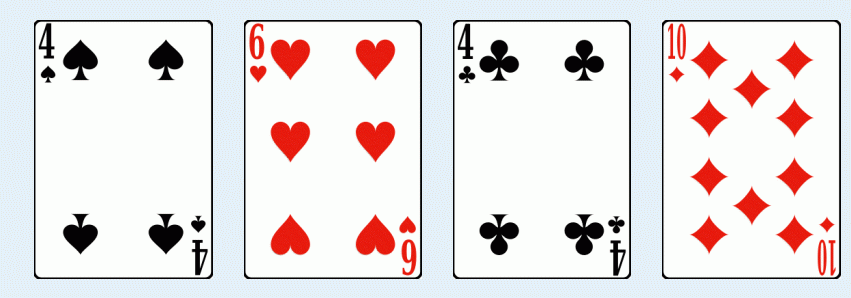

I have a set of super poker cards, consisting of an infinite number of cards. For each positive composite integer p, there
are exactly four cards whose value is p: Spade(S), Heart(H), Club(C) and Diamond(D). There are no cards of other values.
By “composite integer”, we mean integers that have more than 2 divisors. For example, 6 is a composite integer, since it
has 4 divisors: 1, 2, 3, 6; 7 is not a composite number, since 7 only has 2 divisors: 1 and 7. Note that 1 is not composite
(it has only 1 divisor).
Given a positive integer n, how many ways can you pick up exactly one card from each suit (i.e. exactly one spade card,
one heart card, one club card and one diamond card), so that the card values sum to n? For example, if n=24, one way is
4S+6H+4C+10D, shown below:

Unfortunately, some of the cards are lost, but this makes the problem more interesting. To further make the problem even
more interesting (and challenging!), I’ll give you two other positive integers a and b, and you need to find out all the
answers for n=a, n=a+1, …, n=b.